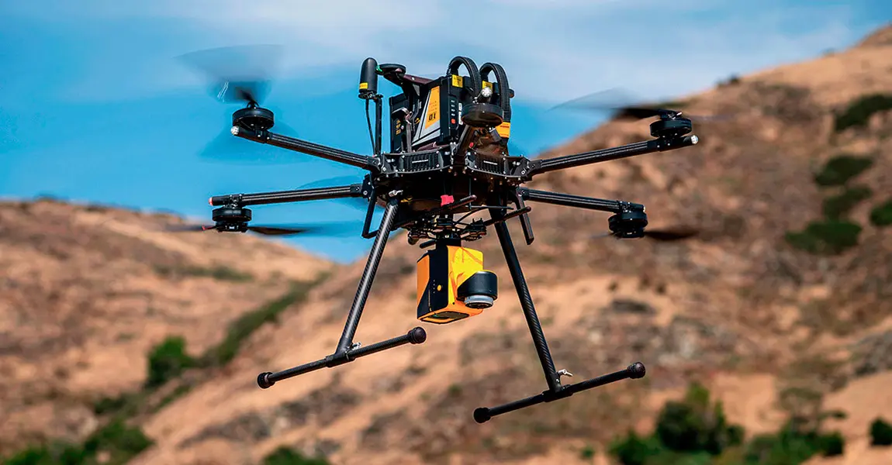
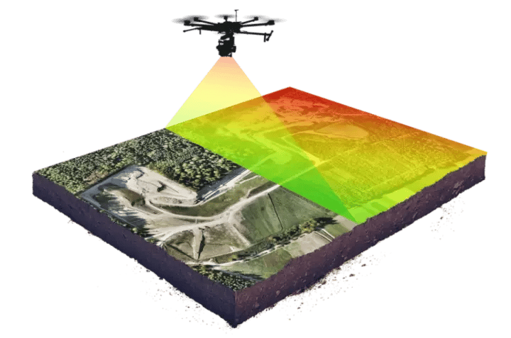
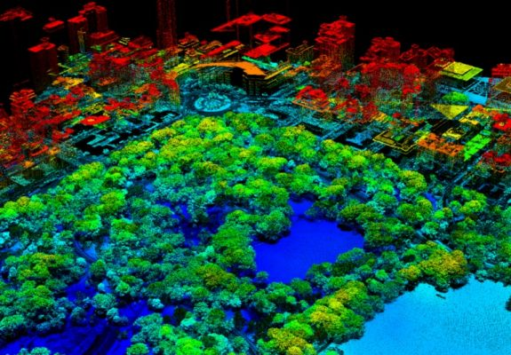
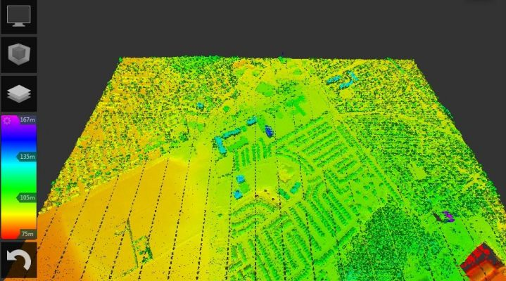
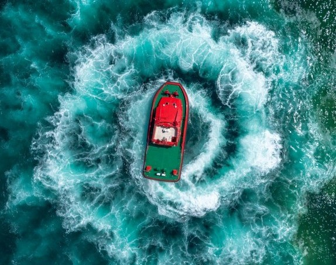
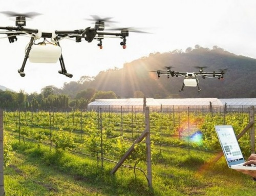
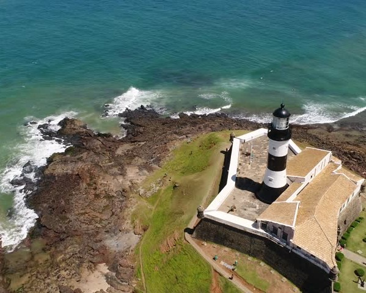

Tecnología LiDAR
Disponemos de Drones con Tecnología LIDAR capaces de realizar estudios
cartográficos al
detalle.

El LiDAR (Light Imaging Detection and Ranging o Laser Imaging Detection and Ranging) funciona
emitiendo pulsos láser y midiendo con precisión el tiempo que tardan estos pulsos en regresar tras
interactuar con las superficies. Este principio constituye la base de la capacidad de LiDAR para
construir mapas tridimensionales del entorno. Al aprovechar esta medición, los sistemas LiDAR pueden
determinar distancias con precisión, lo que los convierte en fundamentales para tareas como la detección
de objetos, el análisis espacial y el modelado del terreno.

Los drones equipados con LiDAR cubren rápidamente grandes áreas, capturando detalles intrincados
que podrían ser un reto con los métodos convencionales. Esta eficacia se traduce en datos detallados
listos para el análisis y la toma de decisiones informadas.
Los drones con sensores LiDAR se adaptan a multitud de aplicaciones, ya sea para supervisar
obras de construcción, evaluar paisajes agrícolas o realizar estudios arqueológicos. Su versatilidad
aumenta la eficacia y el alcance de estos proyectos.
Permiten obtener una nube de puntos del terreno tomándolos mediante un escáner láser aerotransportado
(airborne light scanner, ALS). Para realizar este escaneado se combinan dos movimientos. Uno
longitudinal dado por la trayectoria del dron y otro transversal mediante un espejo móvil que desvía el
haz de luz láser emitido por el escáner.
Para conocer las coordenadas de la nube de puntos se necesita la posición del sensor y el ángulo del
espejo en cada momento. Para ello el sistema se apoya en un sistema GPS diferencial y un sistema
de navegación inercial (INS). Conocidos estos datos y la distancia sensor-terreno obtenida con el
distanciómetro obtenemos las coordenadas buscadas.
El resultado es de decenas de miles de puntos por segundo.

Su capacidad para acceder a regiones remotas o peligrosas, captar imágenes aéreas y recopilar
datos con una precisión excepcional ha revolucionado numerosos sectores. Los drones poseen la
flexibilidad necesaria para alojar diversas cargas útiles, como cámaras, sensores y soluciones LiDAR.
Esta adaptabilidad las convierte en una plataforma ideal para integrar la tecnología LiDAR, ampliando su
utilidad más allá de la imagen aérea tradicional.
Los métodos tradicionales de cartografía exigían un extenso trabajo de campo.
Pero ahora los drones equipados con LiDAR pueden obtener rápidamente datos de elevación, matices de la
infraestructura y mucho más.
¿El resultado?
Mapas más rápidos y mejores.

Ver un ejemplo de la potencia LIDAR
Ya sea para inmobiliarias, restaurantes, hoteles, publicidad,
industria, agricultura, negocios, eventos o lo que necesites,
nuestro equipo está preparado para llevar a cabo
cuanto imagines


